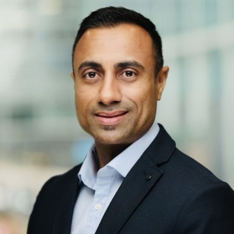

Payments & Digital Assets Leader @ J.P. Morgan
Commercial and strategic leader with 18+ years' experience across investment banking, payments and digital assets, specializing in client growth, strategic partnerships and platform adoption.
Commercial and strategic leader with 18+ years' experience across investment banking, payments and digital assets. Leads Growth & Client Success for Kinexys across EMEA, driving client origination, strategic partnerships and large-scale platform adoption among asset managers and financial institutions.
Recognised for bridging traditional financial markets with emerging digital asset infrastructure, combining deep domain expertise with an entrepreneurial mindset and strong commercial acumen.
JPMorganChase
EMEA Head of Growth & Client Success – Kinexys
2022 – Present
JPMorganChase
Global E-Trading Infrastructure Program Manager
2014 – 2022
Nomura International
Direct Market Access (DMA)
2011 – 2014
Société Générale CIB
Technical Project Manager / Market Data Systems
2004 – 2011
Active property investor with a diversified portfolio, applying capital allocation, risk management and long-term value creation strategies. Brings an entrepreneurial mindset and commercial discipline alongside corporate leadership responsibilities.
BSc (Hons) 2.1 – Computer Science
Prince2 Practitioner · ITIL v3 · Agile Project Management